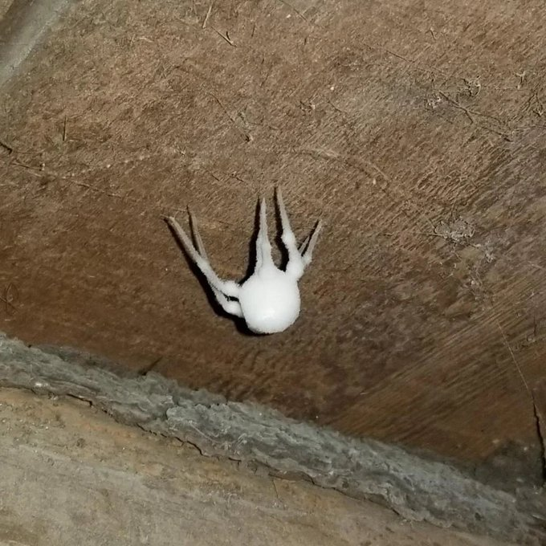

All Things Spiders
(Proverbs 30:28) The spider taketh hold with her hands, and is in kings’ palaces.
(Proverbs 30:28) The spider taketh hold with her hands, and is in kings’ palaces.
Who was the first brave soul courageous enough to taste test this to see if it was edible and healthy or not?
Most insects are not welcome in the home and that is because they are invasive creatures. They invade to take over, they invade to proliferate and spread, and they are usually an unpleasant experience unless you really love insects. However, even insect lovers do not want random bugs taking over the place, most of the time it is not a great time when this happens. An invisible foe has invaded the planet and he has already launched attacks against all of humanity. A war rages on around us every day and most do not have eyes to see the conflict raging. Even worse are the soldiers asleep on the battlefield, the ones on rooftops instead of on the battlefield, or the ones stuck building their own little kingdoms instead of pushing back the kingdom of darkness and building for the King: Jesus. War is tough and war takes discipline, why do we make it so much harder for our own troops with friendly fire and scattered focus on the field?
The above photo is what happens to insects when they get infected by a fungus called Cordyceps. The parasite eats the bug, the parasite totally takes over the creature and causes it to move around to infect other creatures so the fungus can grow and spread. Once the insect is infected all of its faculties are totally taken over. The spider becomes a slave to the fungus, it doesn't know where it's going, or what it's doing, and the bug will eventually land in a place that is conducive for the fungus to start growing. This is a parallel of what the kingdom of darkness is trying to do in this earth. Demonic entities are looking to spread their kingdom, their influence, and way of thinking, acting, speaking and doing across the globe. Without protection every soul is totally open to this influence and you do not have to look hard or far to see it, infact you have to be totally blinded not to notice it.
The frozen, paralyzed, and totally taken over insect is what the believer looks like to an outside observer when caught in sin. The bug infected by Cordyceps is what the soul bound to sin looks like to God when stuck in sin, darkness, and depravity. Many demon possessed individuals were just like the spider taken over by the parasite. An outside entity totally takes over and the end result is no longer in the hands of the individual taken over. Most people never get to this extreme but the natural man that rejects Christ is not better by much without Him. 2 Timothy 2:26 says this: And that they may recover themselves out of the snare of the devil, who are taken captive by him at his will. In other words, the natural man is in chains to sin and bound to the prison of darkness until rescued into the kingdom of light. The Matrix is a bit of an extreme but it's a great parallel because the enemy can grab ahold of people and cause them to stray in strange ways and we are pretty much defenseless outside of the blood of Jesus and the ways of righteousness. Scripture says that all men are blinded by darkness and we are slaves to sin. When speaking on this subject Christ was telling the people how to be free and then they replied we don't need freedom because we have never been bound, they just couldn't understand what Jesus was talking about: They answered him, We be Abraham’s seed, and were never in bondage to any man: how sayest thou, Ye shall be made free? 34 Jesus answered them, Verily, verily, I say unto you, Whosoever committeth sin is the servant of sin (John 8:33-34). We have the natural tendency to call evil good and because of that we justify lust, addiction and every form of evil as ok or not that bad. Every man does what is right in his own eyes, and when this happens right and wrong has no plumb-line and becomes totally subjective and so anything goes.
This is not a word of condemnation but instead it is a wake up call to righteousness. What looks horrible is actually quite healthy! What is noxious to insects is very beneficial to us humans: anti-aging benefits and anti-inflammatory benefits, increased energy and brain functionality are just a few of the many benefits of Cordyceps. I say this as an exhortation because when the church is doing what it is supposed to do and is living like the Body of Christ we still get looked at like a bug that needs to be squashed by the world. John 16:2 says: They shall put you out of the synagogues: yea, the time cometh, that whosoever killeth you will think that he doeth God service. John 15:20 says: Remember the word that I said unto you, The servant is not greater than his lord. If they have persecuted me, they will also persecute you; if they have kept my saying, they will keep yours also. The natural man cannot understand the things of the Spirit with the carnal mind. But when the Body of Christ is not doing what it is supposed to do the world looks on with even worse disdain and terror, like a spider infected with Cordyceps. They don't want to touch us or get near us because now it is a bug infected with something and it will eventually take care of itself. We are living in the final days of the last days. Whatever your theology on the end times is it is not as important as a living, vital, and active faith during these times.